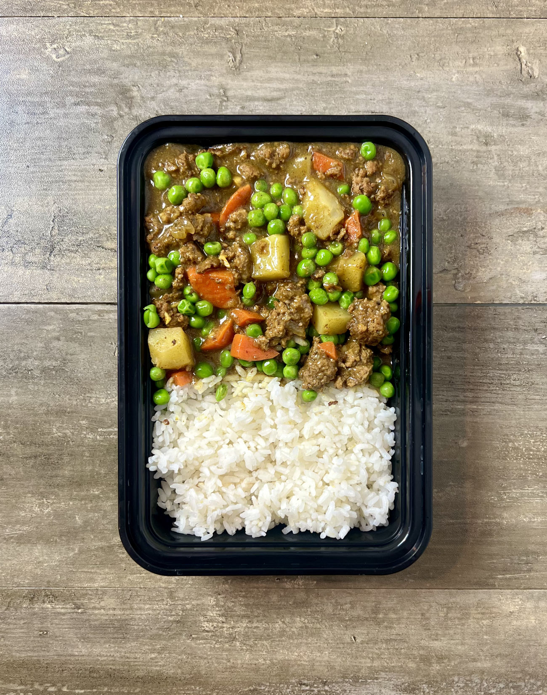

Japanese Ground Beef Curry

This Japanese Ground Beef Curry combines ground beef with aromatic spices and hearty vegetables, all simmered together in a rich and flavorful curry sauce. Enjoy it over a bed of rice for a comforting and satisfying meal.
Ingredients
- 2 lbs (908 g) ground beef (85/15)
- ½ tbsp (7.5 g) oil
- ¼ cup (37 g) flour (gluten-free if needed)
- 3 tbsp (24 g) curry powder
- 2 tbsp (16 g) garam masala
- 1 small (125 g) onion
- 2 medium (150 g) carrots
- 1 large (250 g) russet potato
- 1 tbsp (15 g) minced garlic
- 1 tbsp (15 g) ginger
- 4 cups (960 g) beef broth
- 2 tbsp (30 g) soy sauce (gluten-free if needed)
- 1 tbsp (15 g) Worcestershire sauce
- 8 oz (227 g) frozen peas
- 3¾ cups (562.5 g) cooked rice
Instructions
- Cook rice to yield 3¾ cups (562.5 g) of cooked rice. 1 cup of dry rice will make between 2-3 cups of cooked rice, depending on the type and cooking method.
- Heat a large pot over medium-high heat. Add beef and cook until browned, rendering out the fat.
- Wash and chop vegetables: dice the onion, chop the potato into medium to large pieces, and slice the carrots into thin quarter or half moons. Grate the ginger and mince the garlic.
- Move the beef to the perimeter of the pot, allowing the fat to pool in the center. Add onions, garlic, and ginger. Cook until onions are lightly browned.
- Add curry powder, garam masala, and flour. Stir well to combine.
- Gradually add beef broth while stirring constantly to avoid lumps.
- Add carrots and potatoes. Reduce heat to medium, cover, and simmer for 15-20 minutes, or until potatoes are cooked through.
- Stir in soy sauce, Worcestershire sauce, and frozen peas. Adjust seasoning to taste.
- Divide cooked rice into 5 servings, with ¾ cup of rice per serving. Spoon the curry over the rice and serve.